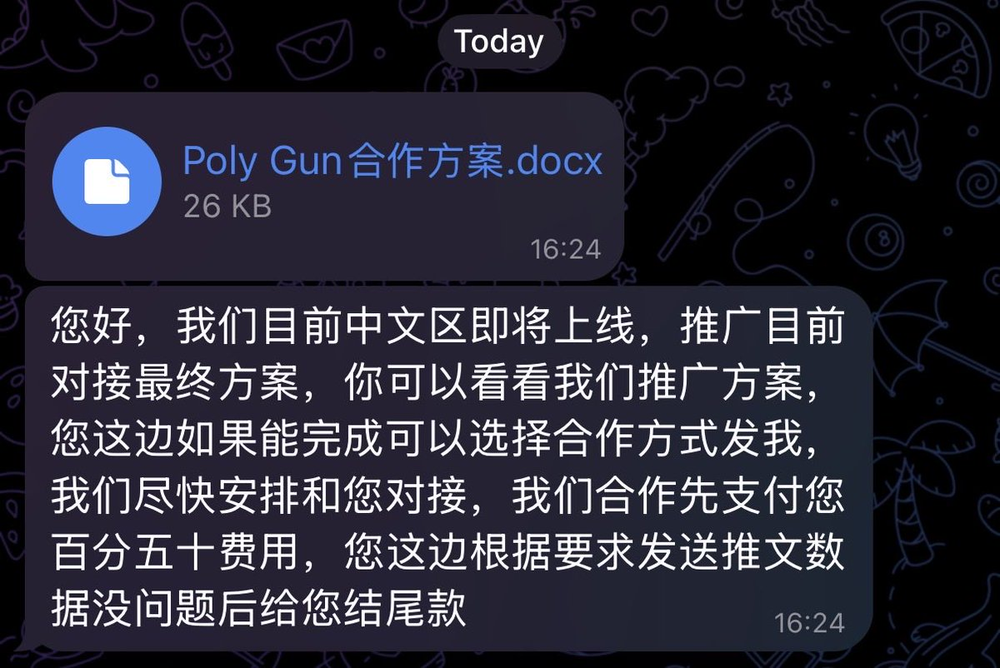

Hydrogen.洛铃🍥Magic Caster
@LolingVerse
@evilcos 受保护的视图 能不能防止这个

Cos(余弦)😶🌫️
@evilcos
披露个投毒攻击，大家留意下。如图这份文档是带恶意代码的，不过我收到的这份是针对 WPS 的，利用的是 2023 年的老漏洞，如果用 WPS 打开这份 docx 可能会触发其中恶意代码。样本我们全面留存了…
这种老手法，太瞧不起我了，怎么说来个 0day 呀…😁 https://t.co/NHQjn4SLgO